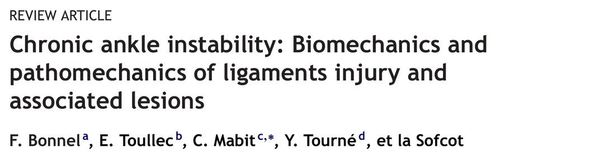
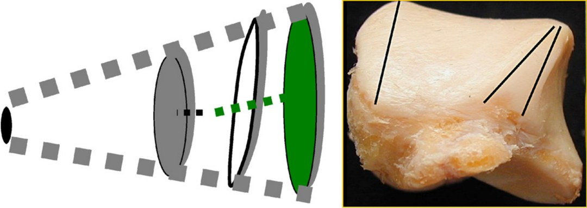
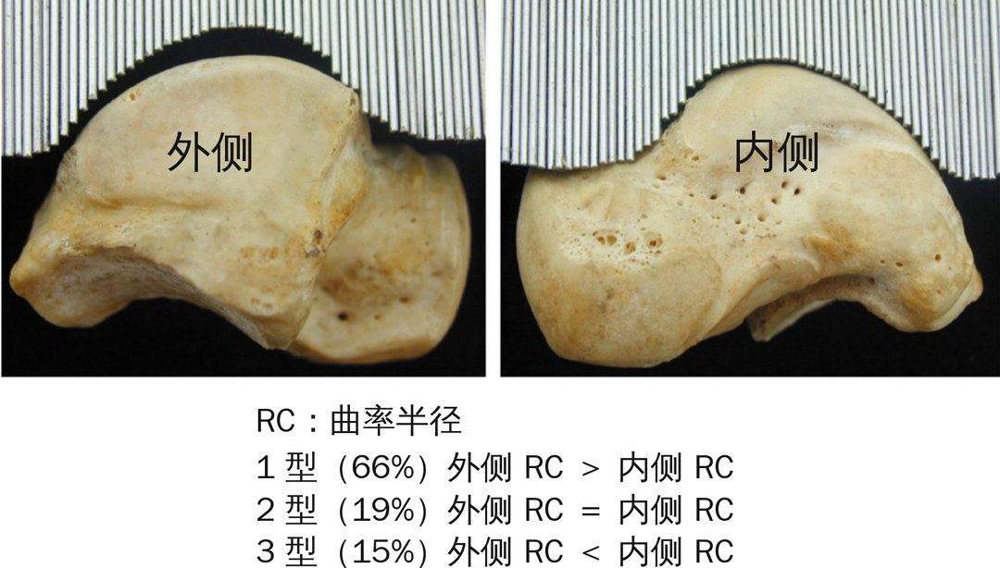
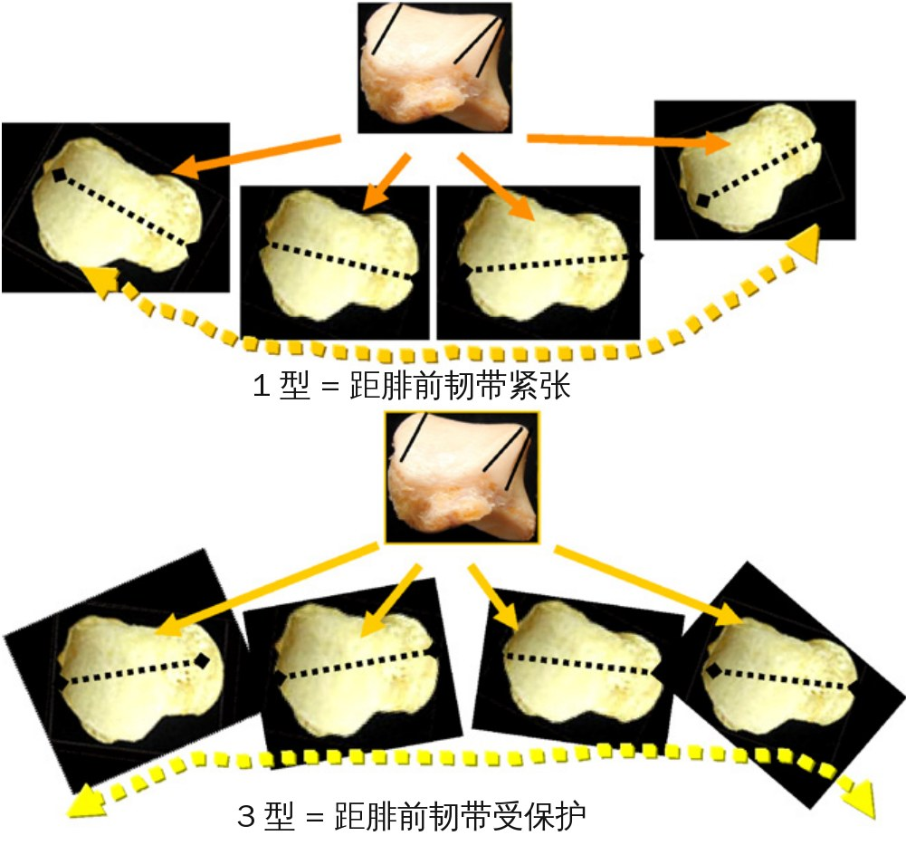
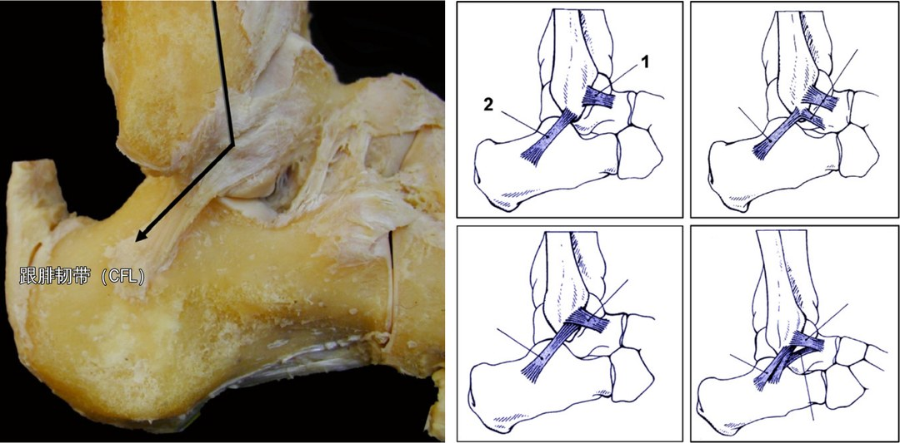
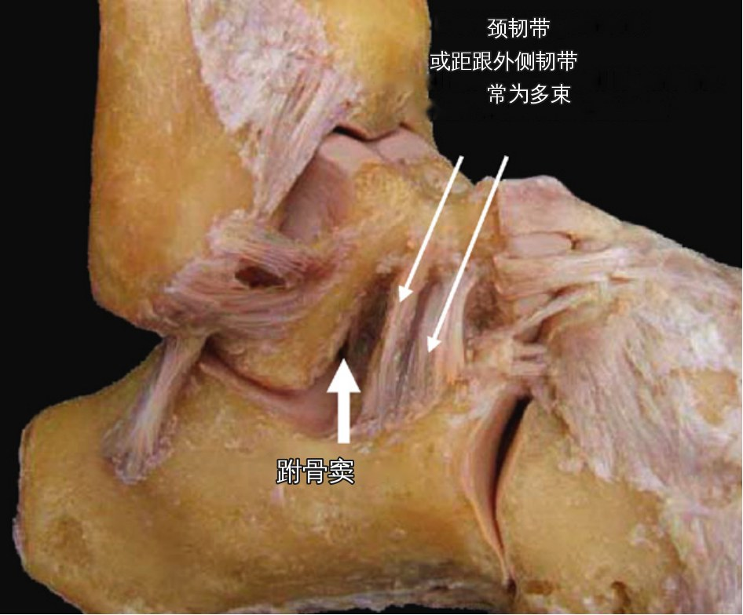
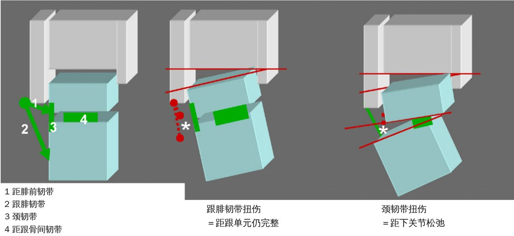
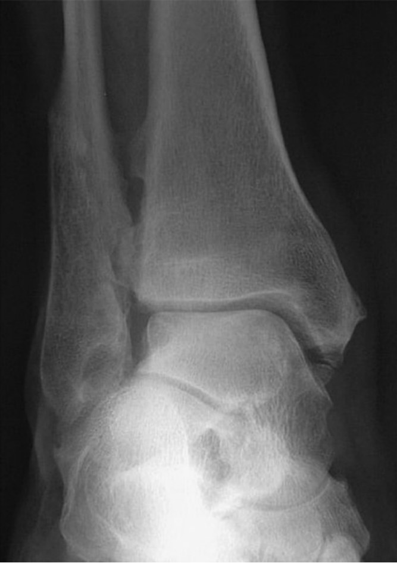
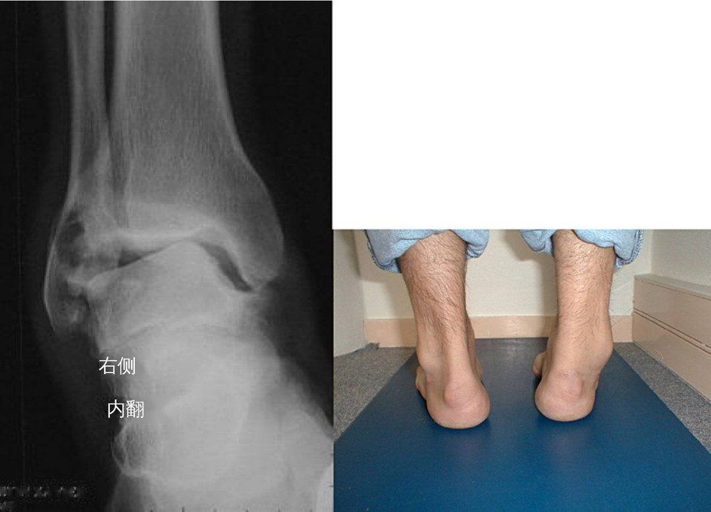

🔖原文首页（OTSR 2010 年第 96 卷）
📚 文献卡片
▪ 英文原题：Chronic ankle instability: Biomechanics and pathomechanics of ligaments injury and associated lesions（慢性踝关节不稳：韧带损伤及合并损伤的生物力学与病理力学）
▪ 作者：F. Bonnel, E. Toullec, C. Mabit, Y. Tourné, 以及法国骨科与创伤外科学会（Sofcot）
▪ 机构：蒙彼利埃解剖实验室 · 波尔多 Tondu 私立医院 · 利摩日 Dupuytren 教学医院 · 格勒诺布尔 Republic 外科集团
▪ 期刊：Orthopaedics & Traumatology: Surgery & Research（OTSR）
▪ 年卷期：2010;96(4):424-432
▪ DOI：10.1016/j.otsr.2010.04.003
▪ 文章类型：综述（Review article），基于文献和 2008 年 Sofcot 专题研讨会资料
▪ 证据级别：原文未标注（属于综述）
▪ 关键词：Ankle anatomy · Subtalar joint · Chronic ankle instability · Ligament reconstruction · Proprioception · Ankle osteoarthritis
慢性踝关节不稳的危险因素分为两类：内因（骨、韧带、姿势等个体形态及其变异）和外因（运动或职业中的损伤机制）。两者相互作用，决定了一次扭伤会不会发展成慢性不稳。
"The biomechanics of the ankle cannot be reduced to a simple flexion—extension movement with one degree of freedom as characterized by the talocrural joint: its function cannot be dissociated from the subtalar joint."
"踝关节的生物力学不能简化为距小腿关节那样单一自由度的屈伸运动：它的功能与距下关节密不可分。"
理解这些因素，有助于选择检查手段、制定治疗策略。
| 层面 | 关键内容 |
|---|---|
| 骨性形态 | 距骨滑车像“截锥体”；内外侧曲率半径不同，分为 3 型，影响韧带受力 |
| 韧带系统 | 外侧副韧带三部分 ＋ 距下关节的颈韧带和距跟骨间韧带 |
| 关节运动 | 滚动＋滑动＋旋转的多轴运动；跖屈位潜在不稳 |
| 损伤机制 | 内翻最常见：先伤颈韧带和距腓前韧带 |
| 不稳类型 | 机械性不稳（韧带松弛、骨性异常）与功能性不稳（本体感觉缺陷、姿势问题） |
一句话概括：慢性踝不稳是骨形态、韧带、本体感觉和足部姿势共同作用的结果。
• 截锥体：距骨滑车顶角平均 24°（±11°）；旋转轴在冠状面向外下倾斜（与胫骨轴成 82°±3.6°，经过两踝尖下方），在水平面向后外与膝横轴成 20°～30°
• 不对称：外侧缘比内侧缘更倾斜；滑车前宽后窄，前后宽度平均相差 4±2 mm；外侧缘后部有一个斜面三角区
• 三个圆：外侧缘由两个不同平面的圆组成（“外踝圆”平行于矢状面、“距骨外侧圆”倾斜 45°），两圆在中前部汇合、向后分开形成三角区；内侧为圆钝的“距骨内侧圆”

🔖图1：距骨形态，不对称的截锥体
距骨滑车按内外侧曲率半径分 3 型：
| 分型 | 曲率半径 | Bonnel 解剖 | Bedin-Mabit CT（32 例） |
|---|---|---|---|
| 1 型 | 内侧 ＜ 外侧 | 86% | 66%（内侧 17 mm，外侧 20 mm） |
| 2 型 | 内侧 ＝ 外侧 | 11% | 19%（均为 18.6 mm） |
| 3 型 | 内侧 ＞ 外侧 | 3% | 15%（内侧 21 mm，外侧 19 mm） |

🔖图2：距骨曲率半径的 CT 生物测量研究（32 个距骨，Bedin-Mabit）
运动方式：Barnett 和 Hicks 发现跖屈和背伸有两条不同的轴。距骨可以做纯旋转，也可以做滚动（旋转＋滑动），两者可同时出现。滚动时瞬时旋转中心集中，说明关节面匹配良好；分散则提示关节功能紊乱。

🔖图3：滚动/滑动运动示意。1 型距骨使距腓前韧带紧张，3 型则保护距腓前韧带
矢状面稳定：推进期距骨嵌入踝穴，像拱顶石一样中和剪切力；关节面的凹凸形态和踝穴顶向前倾斜 5° 也参与稳定。
• 距腓前韧带：起于外踝前缘，水平向前下，止于距骨颈、外踝关节面前方；很短，由上向下稍增宽
• 跟腓韧带：被腓骨肌腱鞘覆盖，起于外踝尖，向后下止于跟骨外侧面；特点是向后倾斜，与外踝轴成 45°
• 距腓后韧带：位置很深、非常强韧，从外踝后窝水平止于距骨后面、滑车正下方
• 变异：距腓前韧带可为双束，或在前、中韧带之间有副韧带

🔖图4（左）：外侧韧带层面，跟腓韧带向后倾斜；图5（右）：距腓前韧带（1）和跟腓韧带（2）的解剖变异示例
• 浅层：呈三角形，起于内踝尖后散开——胫距后部（最强，止于距骨内侧结节）、胫跟部（垂直止于载距突内缘）、胫舟部和胫距前部（止于足舟骨和跖侧跟舟韧带即弹簧韧带）
• “足髋臼”（coxa pedis）：浅层与跟舟跖侧韧带一起，构成距骨周围关节的前内侧稳定结构
• 深层：纤维致密而强韧，从内踝尖深面斜行止于滑车下方的整个距骨内侧面，以及距骨颈最前部
• 距跟骨间韧带：位于跗骨窦，由垂直和斜行纤维束组成，与脂肪组织交织；斜向排列（与冠状面约 35°），是旋转稳定的“中央枢轴”，相当于膝关节的交叉韧带
• 颈韧带（前外侧距跟韧带）：常为多束，连接距骨颈和跟骨外侧缘，是距下关节第一道前外侧稳定结构，外侧与伸肌支持带相连，但常被忽视
• 其他：距跟内侧、后、外侧韧带（外侧韧带不恒定）
• 跟腓韧带：常被说成距下关节稳定结构，其实主要维持“距跟单元”的稳定

🔖图6：颈韧带——距下关节的前外侧“锁”

🔖图7：副韧带复合体示意。跟腓韧带扭伤不等于距下关节不稳；颈韧带扭伤才意味着距下关节松弛
• 最稳定的位置（紧密嵌合位）：距小腿关节最大背伸＋距下关节外翻、跟骨外翻，如下蹲、爬坡；距骨嵌入踝穴，关节面最匹配
• 跖屈即潜在不稳：行走中一旦到达跖屈，踝关节就处于潜在不稳状态
• 双重稳定：旋后时，第一道稳定是距下关节的颈韧带，动作加大时再加上距跟骨间韧带（外侧纤维）；如果再加上跖屈形成内翻，第二道稳定是距腓前韧带。这解释了临床上距小腿关节和距下关节常同时受损
• 旋转：跖屈时距骨内旋（内收），背伸时外旋（外展）；从跖屈到背伸的自动旋转幅度，文献报道 5°～18° 不等，大部分发生在中立位到背伸之间
• 多轴运动：现在多数学者认为距骨做的是屈伸滚动＋水平旋转滑动＋冠状面内收外展的复合运动
• 下胫腓联合：可能不只是适应距骨不对称，更像一个“减震器”，保护外踝免于应力骨折
不同距骨分型对韧带的影响：
| 分型 | 运动特点 | 对韧带的影响 |
|---|---|---|
| 1 型（最常见） | 不对称滚动，像倒车入库一样“滚＋滑”进入踝穴 | 背伸时后部韧带紧张、跖屈时前部紧张，是真正的旋转稳定；跟腓韧带在背伸时与距腓前韧带接近直角，稳定距骨 |
| 2 型 | 旋转应力较小 | 距腓前韧带受力 |
| 3 型 | 内旋和旋后成分最小 | 对距腓前韧带和颈韧带起保护作用 |
内侧韧带是踝关节的“锚点”，旋转围绕它进行。此外，腓骨肌和胫骨后肌等关节周围肌腱对稳定和负重适应至关重要，用它们做肌腱转位修复韧带时必须权衡。
| 机制 | 常见情境 | 受伤结构 |
|---|---|---|
| 内翻（最常见） | 前足外侧缘绊到或落地 | 先伤颈韧带和距腓韧带，极端扭转时伤及分歧韧带；可合并腓肠神经、腓浅神经分支或腓骨肌腱牵拉伤 |
| 内翻＋背伸 | 较少见 | 跟腓韧带 |
| 足固定于地面时旋转 | — | 内侧或外侧间室损伤，纤维性撞击、部分距骨穹窿骨软骨损伤，可累及下胫腓联合 |
| 强力跖屈 | 前足被绊住 | 内外侧副韧带前部纤维、前关节囊，甚至跗跖关节 |
反复扭伤的机制可能各不相同，所以临床和影像检查必须评估踝、中足和后足的全部韧带结构。
| 类型 | 要点 |
|---|---|
| 骨性 | 距骨穹窿较宽、覆盖减少、负重侧位片距骨前移；外踝后移（距腓前韧带松弛或断裂、距骨内旋如高弓足、外踝畸形愈合）；外踝高度影响不大；下胫腓分离或外踝外旋畸形愈合是重要因素 |
| 韧带性 | 不只来自损伤，也有先天性松弛（如马凡综合征）；应力位片价值有争议，肌肉收缩可能掩盖松弛；距下关节不稳已被认识但临床难评估，MRI 更精确 |
| 关节性 | 距骨前宽，所以背伸受限本身就是不稳因素：前方骨赘（撞击性外生骨疣）、前方滑膜增生（纤维性撞击）、小腿三头肌或腓肠肌挛缩都会加重不稳；Barouk 发现腓肠肌短缩者 67% 有整体不稳感，25% 有踝不稳 |

🔖图8：外踝畸形愈合，外旋并伴下胫腓分离
本体感觉是姿势控制的一部分。踝部有四类感受器：
• 肌梭
• 高尔基腱器（位于肌腱-肌肉交界，调节肌张力、防止肌腱过度牵拉）
• Ruffini 关节机械感受器（对速度、方向、幅度敏感，只在极端运动时被激活）
• 足底皮肤机械感受器（Merkel、Ruffini 对皮肤牵拉敏感，Pacini 对振动敏感）
视觉和前庭系统同样是必不可少的姿势信息来源，检查时也要评估。
"None of the neuromuscular responses to ankle varus was fast enough to prevent ligament injury, which occurs in 30 ms."
"对踝内翻的任何神经肌肉反应，都快不过韧带损伤发生的 30 毫秒。"
因此真正起保护作用的是肌肉预激活：动态运动中，肌肉在着地前约 100 ms 就开始激活。Wang 和 Lin 发现，足底感觉下降时慢性不稳会加重，闭眼时更明显；肥胖者本体感觉也会下降。
临床怎么评估本体感觉？
• 闭眼单腿站立：具有体征价值
• 单脚反复跳：似乎最可靠，可评估腓骨肌、胫骨后肌、小腿三头肌等稳定肌的预激活
功能性肌肉不稳：
• 肌肉反应延迟：一过性神经问题（如跷二郎腿后的轻瘫），或肌肉本身问题（肌腹过低、腱鞘炎、腓骨肌腱脱位）
• Morrison 和 Kaminski 的步态分析：第一跖趾关节背伸增加、触地时间延长、中前足外侧缘压力增加、旋前旋后指数增加
功能性姿势不稳：
• 后足内翻是韧带重建失败的原因之一：足外侧缘压力过大、单腿负重时姿势失衡、腓骨肌张力过高（常伴牵张反射丧失），或相反出现反射亢进伴腓骨肌挛缩（如跗骨窦综合征）
• 合并马蹄足时趾长伸肌收缩不足，或相反屈曲过度导致外侧足趾爪形
• 第五趾爪形或第四跖骨头下胼胝，也是踝不稳的征象
• 双下肢不等长（短侧趋于内翻马蹄）、膝内翻、内收足、前足旋前等，也会让足外侧缘受压过大

🔖图9：后足内翻（左：右侧踝关节正位片显示内翻；右：后面观）。未矫正后足内翻，腓骨短肌重建失败
"Not overly 'tighten' ankle ligaments in reconstruction procedures so as to preserve proprioceptive reflexes."
"重建手术中不要把踝关节韧带“拉得过紧”，以保留本体感觉反射。"
• 韧带重建不要过紧，保留本体感觉反射
• 肌腱转位要不改变距小腿关节和距下关节的生物力学
• 平衡肌力缺陷
• 矫正力线，恢复姿势平衡
• 性质：叙述性综述，结合文献和 2008 年 Sofcot 专题研讨会的解剖、CT 数据，多数观点为专家意见
• 数据前后不一：摘要说距骨 1/2/3 型分别为 66%/19%/15%，这是 Bedin-Mabit 的 CT 数据（32 例）；而 Bonnel 的解剖数据为 86%/11%/3%，差别较大，原文未解释原因，样本量也未交代
• 术语不统一：颈韧带在一处被称为“前外侧距跟韧带”，在讲损伤机制时又写成“距跟外侧韧带”，而图 6 写的是“颈韧带或距跟外侧韧带”，读者需注意区分
• 局限：作者自己也承认，评估踝不稳的有效检查很少，这也是扭伤复发和部分重建失败的原因
• 隐私与版权：原图 9 的 X 线片左下角带有患者姓名，本文已抹除；本文为 Elsevier 版权论文（非开放获取），图片仅供学术交流
① 骨：距骨是不对称截锥体，前宽后窄；1 型最常见，使距腓前韧带受力
② 韧带：外侧三韧带 ＋ 颈韧带和距跟骨间韧带；跟腓韧带向后倾斜 45°
③ 运动：背伸最稳定，跖屈潜在不稳；旋后时先颈韧带、再距腓前韧带
④ 机制：内翻最常见，内翻＋背伸才伤跟腓韧带
⑤ 不稳：机械性（骨、韧带、背伸受限）＋功能性（本体感觉、肌肉、后足内翻）
⑥ 治疗：重建不过紧、转位不改变力学、平衡肌力、矫正力线
欢迎关注悦美力公众号，获取更多物理治疗的专业知识！
📄参考文献：
Bonnel F, Toullec E, Mabit C, Tourné Y, Sofcot. Chronic ankle instability: Biomechanics and pathomechanics of ligaments injury and associated lesions. Orthop Traumatol Surg Res. 2010;96(4):424-432. doi:10.1016/j.otsr.2010.04.003
文中图片均来自原文，图中英文和法文标注已改为中文，图 9 中的患者姓名已抹除，仅用于学术交流。